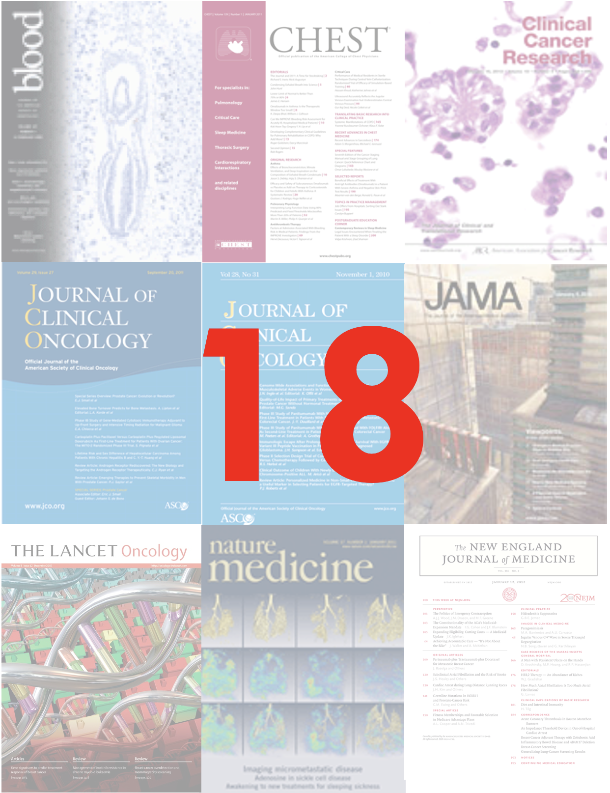

Arcus Education provides “Skills Series” for the entire CHOP community.
This Skills Series is a short, 2-session series aimed at Demystifying R and RStudio!
Session 1: Introduction to R/RStudio
Session 2: Introduction to Literate Statistical Programming
Session 2 Itinerary
Literate Statistical Programmi
Review of R and RStudio
Literate programming is a programming paradigm
Research reproducibility reminders
Quarto documents
Next steps
Goals:
Describe what makes programming “literate”
Explain the real-life consequence of irreproducible research
Name one way Quarto can
R Vs RStudio
R Programming language for data analysis
RStudio Integrated development environment (IDE)
Literate Statistical Programming
Literate programming – Donald Knuth’s term for programming that is effective not just for computers but for people.
Statistical programming – when you analyze data statistically, using a programming language.
Literate statistical programming – when you create scripts (for example in R) that describe for the computer and for human readers the analysis you’re doing and why and how you’re doing each step.
An Example
::: notes
Last time, we showed you some of our analysis code, code we use to analyze our effectiveness in a webinar we give called “Arcus 101.”
Here is a snippet of a script we wrote, and you can see that it has some description of what the code is doing, to help humans. We put in a header, to separate a section that has to do more with bringing the data in and cleaning it. Then we write a paragraph describing what we’re going to do, followed by a chunk of code.
After that code executes, we’ll have some data. So we have some additional instructions, this time in the form of a bulleted list. I’m not showing you all of the code that makes that bulleted list happen, because it’s kind of long, but the code chunk with the grey background below that bulleted list does all the things in that bulleted list.
Hopefully, what this does is make it a lot easier for anyone on my team to pick up this code and work with it, even if they’re not the person who wrote the code. This is what literate statistical programming looks like, and working in R and RStudio is a great way to get started working this way.
This can help you create a kind of lab notebook that records each step you do with your data, in human language and in computer language. This is part of doing reproducible data analyses, which will reduce risk and make “future you” much happier. And I do want to talk briefly about the very real risks that can happen when people don’t do reproducible data analysis. :::
The Duke Cancer Scandal
Chemo sensitivity from microarrays
Serious errors in data analysis
Clinical trials based on flawed models
Papers retracted, lawsuits settled

An Easy Excel “Slip of the Finger”
Duke
"1881_at"
"31321_at"
"31725_s_at"
"32307_r_at"
MD Anderson
"1882_g_at"
"31322_at"
"31726_at"
"32308_r_at"
Do you see the off-by-one indexing error?
“Common problems are simple…
Off-by-one indexing error
Sensitive / resistant label reversal
Confounding in experimental design
Inclusion of data from non-reported sources
Wrong figure shown
… and simple problems are common.”
Point-and-Click…
… is not reproducible!
Reproducibility Helps “Teams of One”
Can we redo the analysis with this month’s data?
Why do the data in Table 1 not seem to agree with Figure 2?
Why did I decide to omit these six samples from my analysis?
Your closest collaborator is you from 6 months ago…
Introducing Quarto
Running a Single Code Chunk
Can you see the green “play” button?
That’s how you run this chunk!
Rendering
You will see (“Knit”/“Preview” instead of “Render” in R Markdown documents)